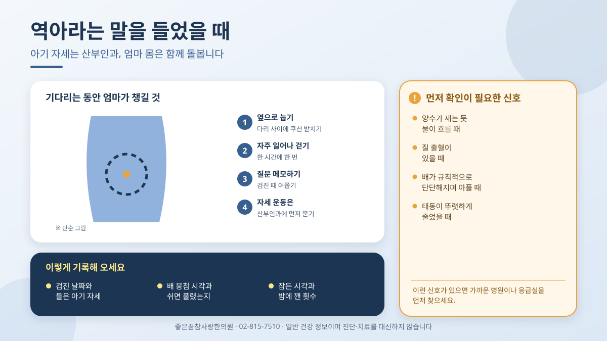

이종호 한의사 감수좋은꿈참사랑한의원 대표원장 (한의사 면허번호 19769)발행 2026-11-26 · 수정 2026-11-26
이 글의 차례
정기 검진을 마치고 병원 주차장으로 걸어 나오는 길, 초음파 화면에서 들은 한마디가 계속 귀에 남습니다. "아기가 아직 거꾸로 있네요." 선생님은 담담하게 말씀하셨는데, 집에 오는 내내 휴대폰으로 '역아 돌리는 법'을 검색하게 됩니다.
진료실에서도 이 말을 들은 뒤 걱정스러운 얼굴로 찾아오시는 분들을 만납니다. 그런데 대부분은 아기가 거꾸로 있다는 사실 자체보다, 내가 뭔가 잘못해서 그런 건 아닐까, 지금 뭘 해야 하는 건 아닐까 하는 마음에 더 지쳐 계십니다.
먼저 말씀드리고 싶은 것은, 역아는 엄마가 무엇을 잘못해서 생기는 일이 아니라는 점입니다. 아기는 배 속에서 꽤 오랫동안 자유롭게 자세를 바꾸고, 머리가 아래로 자리 잡는 시기도 아기마다 다릅니다. 임신 중기에 거꾸로 있다는 말은 흔히 듣는 말이기도 합니다.
그래서 이 글에서는 역아가 어떤 상태인지, 산부인과에서 무엇을 살피는지, 그 사이에 엄마의 몸과 마음을 어떻게 돌보면 좋은지를 차근차근 정리해 보려 합니다. 아기의 자세에 관한 판단과 결정은 산부인과에서 하고, 한의원은 엄마가 하루를 조금 더 편하게 지내도록 곁에서 돕는 자리라고 생각해 주시면 됩니다.
역아는 어떤 상태를 말하나요
보통 출산이 가까워지면 아기는 머리를 엄마의 골반 쪽으로 향하고 자리를 잡습니다. 역아는 그 반대로 엉덩이나 발이 아래쪽, 머리가 위쪽에 있는 자세를 말합니다. 흔히 '아기가 거꾸로 있다'고 표현하지만, 의학적으로는 둔위라고 부르기도 합니다.
역아에도 여러 모양이 있습니다. 엉덩이가 아래에 있고 다리를 위로 쭉 뻗은 자세, 책상다리를 하듯 다리를 접고 앉은 자세, 한쪽 발이 아래로 내려온 자세 등이 있습니다. 어떤 모양인지는 초음파로 확인하며, 이것 역시 산부인과에서 판단하는 부분입니다.
임신 중기에는 아기가 작고 양수 속 공간이 넉넉해서 자주 돌아눕습니다. 그래서 이 시기의 역아는 다음 검진에서 바로 자세가 바뀌어 있는 경우도 많습니다. 출산이 가까워질수록 아기가 커지고 공간이 좁아지면서 자세가 점점 굳어 가는데, 그 시점의 자세가 출산 방법을 정할 때 중요해집니다.
왜 아기가 거꾸로 자리를 잡을까요
많은 경우 뚜렷한 이유 없이 역아가 됩니다. 아기가 그 자세를 편하게 느꼈을 수도 있고, 마침 검진하던 순간 그 자세였을 수도 있습니다. 다만 몇 가지 상황에서는 역아가 조금 더 흔하게 나타난다고 알려져 있습니다.
- 양수가 많거나 적어서 아기가 움직이는 공간이 달라진 경우
- 태반이 자궁 아래쪽에 자리 잡은 경우
- 자궁 모양이 조금 다르거나 자궁에 근종이 있는 경우
- 쌍둥이처럼 배 속에 아기가 둘 이상인 경우
- 아직 출산 예정일까지 시간이 많이 남은 경우
이런 이유는 엄마가 생활을 바꾼다고 달라지는 것이 아닙니다. 그러니 자세를 잘못 잤다거나, 일을 많이 했다거나, 찬 음식을 먹었다고 자책하지 않으셨으면 합니다. 원인이 있는지, 출산 방법에 영향을 주는지는 산부인과 선생님이 초음파로 함께 살펴 주십니다.
산부인과에서는 무엇을 살피고 결정하나요
역아라는 말을 들은 뒤에는 산부인과 정기 검진이 가장 중요한 길잡이입니다. 아기의 자세가 바뀌었는지, 양수량과 태반 위치는 어떤지, 아기의 크기와 엄마의 상태는 어떤지를 함께 봅니다. 이 정보를 모아 출산 방법과 시기를 설명해 주십니다.
출산이 가까워져도 아기가 거꾸로 있다면, 산부인과에서는 상황에 따라 몇 가지 선택지를 이야기합니다. 아기의 자세를 바꾸어 보는 방법을 설명하기도 하고, 계획된 제왕절개를 함께 의논하기도 합니다. 어떤 방법이 맞는지는 엄마와 아기의 상태에 따라 다르므로 담당 선생님과 충분히 상의하시면 됩니다.
인터넷에서 보는 자세 운동이나 민간요법은 엄마와 아기의 상태에 따라 맞지 않을 수 있습니다. 무엇을 따라 해 보고 싶다면 먼저 산부인과 선생님께 해도 괜찮은지 여쭤 보세요. 한의원에서도 아기의 자세를 바꿔 드린다고 말씀드리지 않습니다.
역아라는 말을 들은 뒤 흔히 겪는 마음과 몸
역아라는 말을 들은 뒤에는 몸보다 마음이 먼저 바빠집니다. 수술을 하게 될까 걱정되고, 주변에서 이런저런 방법을 권하는 말에 흔들리고, 매일 배를 만지며 아기가 돌았는지 궁금해집니다. 이런 마음은 아주 자연스러운 반응입니다.
몸에서는 갈비뼈 아래가 묵직하게 눌리는 느낌을 말씀하시는 분이 많습니다. 아기의 머리가 위쪽에 있으면 명치나 갈비뼈 아래쪽이 단단하게 느껴지고, 숨이 깊게 쉬어지지 않는 것 같다고 하십니다. 반대로 아래쪽에서 발로 차는 느낌이 방광 쪽으로 와서 소변이 더 자주 마렵다는 분도 계십니다.
여기에 임신 후기에 흔한 허리와 골반의 뻐근함, 밤잠을 설치는 일, 소화가 더딘 느낌이 겹칩니다. 걱정이 많아지면 잠이 더 얕아지고, 잠이 얕으면 다음 날 마음이 더 예민해지는 고리가 생기기 쉽습니다. 한의원에서 함께 살피는 것은 바로 이런 엄마의 하루입니다.
태동 느낌만으로 자세를 알 수 있을까요
엄마들은 태동이 어디서 느껴지는지를 보고 아기의 자세를 짐작하곤 합니다. 아래쪽에서 발길질이 느껴지면 거꾸로 있는 것 같고, 위쪽에서 느껴지면 머리가 아래로 내려온 것 같다고 생각하시지요. 어느 정도 참고가 되기는 하지만, 손과 발이 함께 움직이기 때문에 느낌만으로 정확히 알기는 어렵습니다.
그래서 집에서 자세를 맞혀 보려고 애쓰기보다는, 아기가 평소처럼 잘 움직이는지를 살피는 쪽이 더 쓸모 있습니다. 하루 중 아기가 자주 움직이는 시간대를 알아 두고, 그 흐름이 평소와 다르지 않은지 가볍게 확인해 보세요. 움직임이 뚜렷하게 줄었다고 느껴지면 다니시는 산부인과에 바로 연락하시면 됩니다.
가족이 곁에서 도울 수 있는 것
역아라는 말을 들은 엄마에게 가장 힘이 되는 것은 방법을 알려 주는 말보다 함께 기다려 주는 태도입니다. "그거 이렇게 하면 돈다더라"는 말은 좋은 뜻이어도 엄마에게는 숙제처럼 들릴 수 있습니다. 주변의 권유가 많아질 때는 "산부인과 선생님과 상의하고 있어요" 한마디로 정리해도 괜찮습니다.
남편이나 가족은 검진에 함께 가서 설명을 같이 듣고, 집안일 가운데 무거운 것을 들거나 오래 서 있어야 하는 일을 나눠 맡아 주시면 좋습니다. 저녁에 엄마의 허리와 다리를 가볍게 쓸어 주거나, 쿠션 자리를 함께 맞춰 주는 것만으로도 밤잠이 한결 편해질 수 있습니다.
출산 가방을 미리 싸 두고, 병원까지 가는 길과 시간을 한 번 확인해 두는 것도 마음을 가볍게 합니다. 어떤 방법으로 출산하게 되더라도 준비해 둔 것이 있다는 느낌이 걱정을 조금 덜어 줍니다.
먼저 이렇게 여쭙니다
처음 오시면 저는 대략 이런 순서로 여쭙니다. 미리 생각해 오시면 상담이 훨씬 수월해집니다.
- 지금 임신 몇 주이시고, 역아라는 말은 언제 처음 들으셨나요?
- 다니시는 산부인과에서 출산 방법에 대해 어떤 설명을 들으셨나요?
- 배가 뭉치는 느낌은 하루에 얼마나, 어떤 때 오나요?
- 허리, 골반, 갈비뼈 아래 가운데 어디가 가장 불편하신가요?
- 밤잠은 몇 번 깨시고, 깨면 다시 잠들기 어려우신가요?
- 지금 드시는 약이나 영양제, 철분제가 있나요?
모든 질문에 정확히 답하지 못하셔도 괜찮습니다. 산모수첩과 지금 가장 힘든 한 가지만 말씀해 주셔도 이야기는 충분히 시작됩니다.
일상에서 먼저 해 볼 수 있는 것
역아라는 말을 들었다고 해서 생활을 크게 바꿔야 하는 것은 아닙니다. 산부인과에서 따로 조심하라는 말씀이 없었다면, 평소처럼 지내되 몸이 편한 쪽을 찾아가는 것이 가장 좋습니다.
- 누울 때는 옆으로 누워 다리 사이에 쿠션을 끼우기
- 오래 앉아 있을 때는 한 시간에 한 번 일어나 천천히 걷기
- 배를 차갑게 두지 않도록 얇은 옷을 겹쳐 입기
- 식사는 조금씩 자주 나누어 드시고, 식후 바로 눕지 않기
- 걱정이 커질 때는 검색을 잠시 멈추고 궁금한 점을 메모해 두기
- 인터넷에서 본 자세 운동은 산부인과에 먼저 여쭙고 하기
갈비뼈 아래가 눌리는 느낌이 있을 때는 등을 곧게 펴고 앉아 팔을 머리 위로 천천히 올려 보세요. 가슴과 배 사이에 공간이 조금 생기면서 숨이 한결 편해지는 분이 많습니다. 숨을 내쉴 때 어깨를 아래로 내려놓는 느낌을 함께 가져 보시면 좋습니다.
마음이 불안할 때는 혼자 정보를 모으기보다 다음 검진에서 여쭤 볼 질문을 적어 두는 쪽을 권합니다. 막연한 걱정이 구체적인 질문으로 바뀌면 마음이 조금 가라앉습니다. 남편이나 가족과 함께 검진에 가서 설명을 같이 들으시는 것도 큰 도움이 됩니다.
잠자리에서는 똑바로 누운 자세가 숨이 막히거나 어지럽게 느껴질 수 있습니다. 왼쪽이든 오른쪽이든 편한 쪽으로 누워 등 뒤에도 쿠션을 하나 대 두면 자세가 안정됩니다. 밤에 자주 깨신다면 낮잠을 짧게 나누어 주무셔서 부족한 잠을 채워 주세요.
한의원에서 함께 살필 수 있는 경우
- 임신 후기에 허리와 골반이 뻐근해 걷고 돌아눕기가 힘든 경우
- 갈비뼈 아래와 명치가 눌리는 느낌으로 숨이 얕아진 경우
- 걱정이 많아져 잠이 얕고 자주 깨는 경우
- 소화가 더디고 속이 더부룩한 날이 이어지는 경우
- 다리가 붓고 저녁이면 무거워지는 경우
좋은꿈참사랑한의원에 오시면 먼저 아래 '먼저 확인이 필요한' 신호가 없는지부터 봅니다. 그다음 맥을 짚고, 불편한 자리를 직접 여쭙고 만져 보며 어떤 자세에서 편하고 불편한지를 확인합니다. 배를 누르는 진찰은 하지 않고, 누우실 때도 옆으로 눕는 자세를 기본으로 합니다.
진찰한 내용을 바탕으로 생활에서 바꿔 볼 것 하나와 함께, 지금 몸 상태에 맞는 관리 방법을 함께 정합니다. 임신 중 침은 자리와 깊이, 시간을 조심스럽게 고르고, 한약은 산부인과와 상의하고 드시는 약을 확인한 뒤 신중하게 결정합니다. 산부인과 검진 일정과 결정은 그대로 따르시도록 안내합니다.
한의원 진료는 산부인과 진료를 대신하는 것이 아니라 나란히 가는 것입니다. 산부인과에서 아기와 출산을 살피고, 한의원에서는 그 사이 엄마의 허리와 잠, 마음의 긴장을 함께 돌본다고 생각해 주시면 됩니다.
이렇게 기록해 오시면 상담이 쉬워집니다
임신 후기의 몸은 하루하루 조금씩 달라집니다. 일주일 정도만 간단히 적어 보세요.
- 검진 날짜와 그때 들은 아기 자세, 주수
- 배가 뭉친 시각과 횟수, 쉬면 풀렸는지
- 아기가 자주 움직이는 시간대
- 허리, 골반, 갈비뼈 아래 중 불편했던 자리와 자세
- 잠든 시각과 밤에 깬 횟수
- 드시는 약과 영양제 이름
기록을 나란히 놓고 보면 어떤 자세와 시간대에 몸이 힘든지가 보이기 시작합니다. 같은 기록을 산부인과 검진 때도 보여 드리면 이야기가 훨씬 수월해집니다.
기다리는 시간도 출산 준비의 일부입니다
역아라는 말을 들은 뒤의 몇 주는 길게 느껴집니다. 하지만 그 시간 동안 엄마가 할 일은 아기를 억지로 돌리는 것이 아니라, 잘 자고 잘 먹고 몸을 편하게 두는 것입니다. 아기의 자세와 출산 방법은 산부인과 선생님과 함께 정하시면 됩니다.
어떤 방법으로 아기를 만나게 되더라도 엄마가 해낸 열 달의 무게는 달라지지 않습니다. 검진 결과를 기다리는 동안 마음이 조급해질 때는, 오늘 하루 아기가 평소처럼 잘 움직였는지, 나는 잘 먹고 조금이라도 쉬었는지를 떠올려 보세요. 그 두 가지를 챙긴 하루라면 충분히 잘 지낸 하루입니다.
이번 주에는 옆으로 눕는 쿠션 자리 하나, 궁금한 질문 메모 하나부터 챙겨 보세요. 오시면 그 메모를 함께 펼쳐 보겠습니다.
이런 증상은 먼저 확인이 필요합니다
- 양수가 새는 듯 물이 흐르거나 질 출혈이 있는 경우
- 배가 규칙적으로 단단해지며 아프거나 태동이 뚜렷하게 줄어든 경우
이런 신호가 있으면 한의원보다 가까운 병원이나 응급실을 먼저 찾으세요.
함께 읽으면 좋은 글
- 임신 중 허리와 골반, 치골이 아플 때는 무엇을 살피고 생활은 어떻게 하나요?
- 임신 중 밤에 잠이 오지 않거나 자주 깰 때는 무엇을 살피고 어떻게 지내나요?
- 임신 중이거나 임신 가능성이 있을 때는 한의원에 무엇을 알려야 하나요?
- 제왕절개로 출산한 뒤 몸 회복은 무엇부터 살피고, 생활은 어떻게 하나요?
- 임신 중 발과 다리가 붓는 부종은 어디까지 흔하고, 생활에서는 어떻게 살피나요?

여쭙는 것
- 지금 임신 몇 주이시고, 역아라는 말은 언제 처음 들으셨나요?
- 다니시는 산부인과에서 출산 방법에 대해 어떤 설명을 들으셨나요?
- 배가 뭉치는 느낌은 하루에 얼마나, 어떤 때 오나요?
생활에서 해 볼 것
- 누울 때는 옆으로 누워 다리 사이에 쿠션을 끼우기
- 오래 앉아 있을 때는 한 시간에 한 번 일어나 천천히 걷기
- 배를 차갑게 두지 않도록 얇은 옷을 겹쳐 입기
한의원에서 함께 살필 것
- 임신 후기에 허리와 골반이 뻐근해 걷고 돌아눕기가 힘든 경우
- 갈비뼈 아래와 명치가 눌리는 느낌으로 숨이 얕아진 경우
- 걱정이 많아져 잠이 얕고 자주 깨는 경우
먼저 확인이 필요한 신호
- 양수가 새는 듯 물이 흐르거나 질 출혈이 있는 경우
- 배가 규칙적으로 단단해지며 아프거나 태동이 뚜렷하게 줄어든 경우
한눈에 보는 표
| 구분 | 핵심 |
|---|---|
| 여쭙는 것 | 지금 임신 몇 주이시고, 역아라는 말은 언제 처음 들으셨나요? 다니시는 산부인과에서 출산 방법에 대해 어떤 설명을 들으셨나요? |
| 생활에서 해 볼 것 | 누울 때는 옆으로 누워 다리 사이에 쿠션을 끼우기 오래 앉아 있을 때는 한 시간에 한 번 일어나 천천히 걷기 |
| 한의원에서 함께 살필 것 | 임신 후기에 허리와 골반이 뻐근해 걷고 돌아눕기가 힘든 경우 갈비뼈 아래와 명치가 눌리는 느낌으로 숨이 얕아진 경우 |
| 먼저 확인이 필요한 신호 | 양수가 새는 듯 물이 흐르거나 질 출혈이 있는 경우 배가 규칙적으로 단단해지며 아프거나 태동이 뚜렷하게 줄어든 경우 |
자주 묻는 질문
역아라는 말을 들었는데 제가 뭘 잘못한 걸까요?
역아는 엄마의 생활 습관 때문에 생기는 일이 아닙니다. 뚜렷한 이유 없이 생기는 경우가 많고, 중기에는 다음 검진에서 자세가 바뀌어 있는 경우도 흔하니 자책하지 않으셔도 됩니다.
한의원에서 아기 자세를 바꿔 줄 수 있나요?
아기의 자세에 관한 판단과 방법은 산부인과에서 정합니다. 한의원에서는 아기 자세를 바꿔 드린다고 말씀드리지 않고, 엄마의 허리·골반 불편과 잠, 긴장을 함께 살핍니다.
인터넷에서 본 역아 자세 운동을 해도 되나요?
엄마와 아기의 상태에 따라 맞지 않을 수 있습니다. 따라 해 보고 싶은 동작이 있다면 다니시는 산부인과에 먼저 해도 괜찮은지 여쭤 보세요.
임신 중에 침을 맞아도 괜찮나요?
임신 주수와 산부인과 소견을 먼저 확인한 뒤, 침 자리와 깊이, 시간을 조심스럽게 정합니다. 처음 오실 때 임신 중이라는 사실과 주수를 꼭 먼저 알려 주세요.
역아면 제왕절개를 해야 하나요?
출산 방법은 아기의 자세와 크기, 양수, 엄마의 상태를 함께 보고 산부인과에서 설명해 주십니다. 궁금한 점을 미리 적어 가서 담당 선생님과 충분히 상의하시길 권합니다.
좋은꿈참사랑한의원은 재진 때 지난번 이야기부터 이어서 여쭙니다. 진료시간과 예약은 오시는 길에서 확인하세요.
어디서 상담받을 수 있나요?
좋은꿈참사랑한의원은 서울 동작구 만양로2길 2 신성빌딩 3층·5층(서울 동작구 상도동, 7호선 상도역 3번 출구 근처)에 있습니다. 한의사 3명(이종호 대표원장, 조영기 수석진료원장, 정원영 진료원장)이 진료합니다. 진료시간은 평일 09:30~20:00(점심 13:00~14:00), 토·일·공휴일 09:30~15:00이며, 방문 전 전화로 확인을 권합니다. 예약은 네이버 예약, 카카오톡 상담, 전화 02-815-7510로 받습니다.
이 글은 일반적인 건강 정보이며 개인의 진단이나 치료를 대신하지 않습니다. 증상이 있거나 복용 중인 약이 있다면 진료를 통해 확인하세요. 치료 효과는 개인마다 다를 수 있습니다.
작성 기준: 일반적으로 알려져 있는 건강 정보를 참고해 정리했습니다(대표원장 감수). 증상 기록은 1~2주 동안 하루 1회, 비슷한 시간에 적어 오시면 지난 상태와 비교하기 쉽습니다.